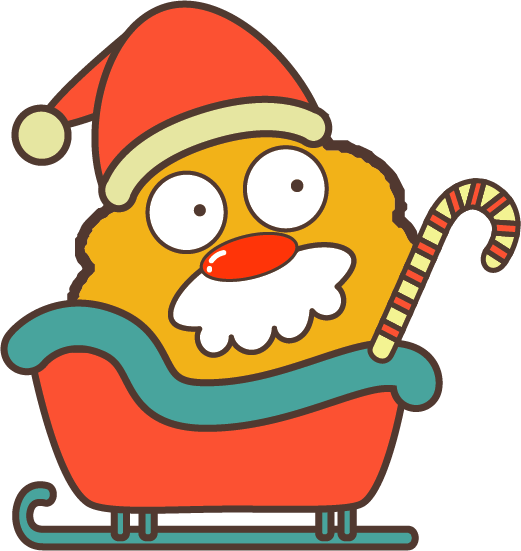

NTPU elves
warm your heart
你是哪種聖誕可愛鬼?
NTPU elves
warm your heart
你是哪種聖誕可愛鬼?
你的聖誕可愛鬼是......聖誕老人!🎅️

-----------------------------------------
大家都很喜歡他(除了克里希克拉赫以外)，為了每年的聖誕節都會提早六個月開始籌畫準備。
做事總是很積極，喜歡列出一天的代辦事項，把聖誕節規劃得完美無缺。
不漏掉任何一個乖小孩，希望大家都可以感受到聖誕節的快樂氛圍。
-----------------------------------------
與你合得來的聖誕可愛鬼有......癱在地上的一攤雪、聖誕小妖精、來自德國農場的聖誕樹
點選文字看看你的可愛好朋友是誰!